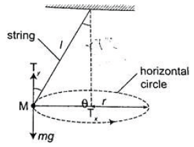

- It consists of a small massive object tied to the end of a thin string tied to affixed rigid support.
- The object is then pulled at an angle then made to whirl in a horizontal circle.
 - When speed of the object is constant the angle becomes θ constant also. If the speed is increased the angle increases, θ that is the object rises and describes a circle of bigger radius. Therefore as the angular velocity increases ‘r’ also increases.
Uniform Circular Motion